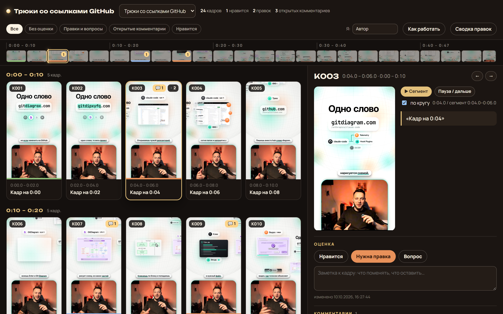
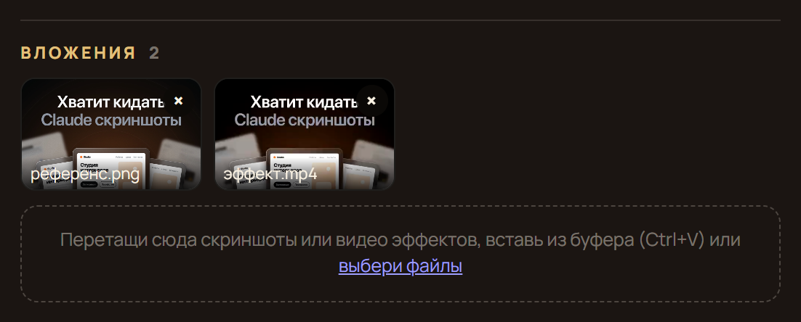
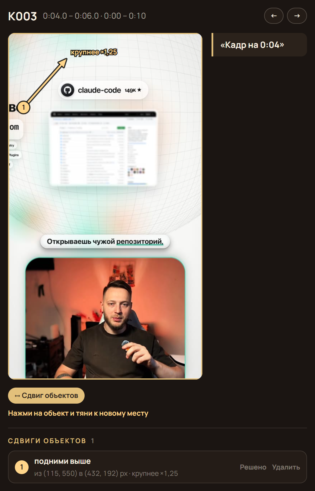
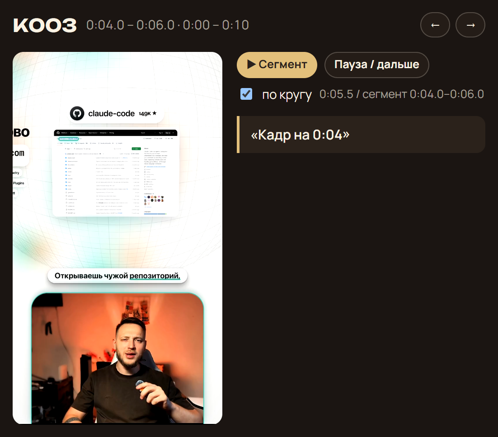

Когда браться: в уроке 1.4, как только Монтажёр прислал лист кадров. С этого момента правки оставляйте на доске, а не в чате. Видео в кадрах появится после черновика.
Результатвы показываете правки прямо на кадрах ролика, а агент исправляет и отвечает под каждой.
Как выглядит доска

1234
Что это. Доска это тот же лист кадров К001… из урока 1.4, только в браузере и с кнопками для правок. Кадры идут каждые 2 секунды. Доска работает на вашем компьютере без интернета и без входа, ролик никуда не загружается.
напишите, что исправить. Галочка «привязать к моменту видео» запомнит секунду.

3Образец
перетащите скриншот или видео нужного эффекта или вставьте его: Ctrl+V (на Mac: Cmd+V).

4Стрелка «Сдвиг»
кнопка «↔ Сдвиг объектов», протяните стрелку мышкой от объекта к новому месту, подпишите, выберите «крупнее» или «мельче».

Кнопка «Сегмент» проигрывает 2 секунды этого кадра, чтобы вы увидели движение.
Для первого раза хватит оценки и комментария.
Что делаете вы
1Скажите Монтажёру: «Собери доску раскадровки для ролика».
2Попросите «запусти доску» и откройте в браузере адрес http://localhost:4321. Он работает только на вашем компьютере, пока доска запущена: на телефоне и у других людей не откроется.
3Листайте кадры стрелками ← и → на клавиатуре. Где что-то не так, поставьте оценку и напишите комментарий.
4Покажите, как надо: приложите образец или поставьте стрелку.
5Напишите в чат: «Я оставил комментарии на доске, прочитай и поправь».
6Посмотрите новую версию. Не согласны: нажмите «Открыть снова» и допишите.